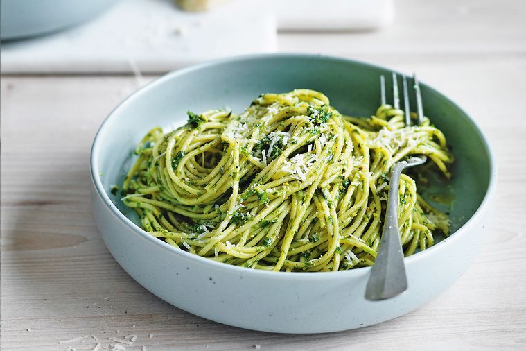

Rocket Pesto with Spelt Spaghettini
Time: 10mins Servings:4
Recipes

Recipe Origin
- 50g rocket (about 2 bunches), stalks trimmed
- 50g basil leaves, plus extra to serve
- 1 garlic clove
- 1/3 cup (50g) pine nuts, toasted
- 140ml olive oil
- 75g finely grated parmesan, plus extra to serve
- Juice of ½ lemon, or to taste
- 350g spelt spaghettini
-
To make the rocket pesto, combine the rocket, basil, garlic, half the pine nuts and 100ml olive oil in a blender,
season then blend until smooth. Transfer to a container, stir in half the parmesan and the remaining oil,
cover and refrigerate until required.
-
Just before serving, stir in the remaining pine nuts, add a squeeze of lemon to taste and check the seasoning.
-
Bring a large saucepan of salted water to the boil.
-
Drain, Add the spaghettini and boil until al dente the exact time will depend on the pasta, but usually this will take 8-10 minutes.
-
Reserving a tablespoon or two of the pasta cooking water. Return the pasta to the pan,
then toss through the pesto and a little of the reserved cooking water.
-
Serve hot, scattered with extra basil leaves and parmesan.